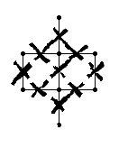
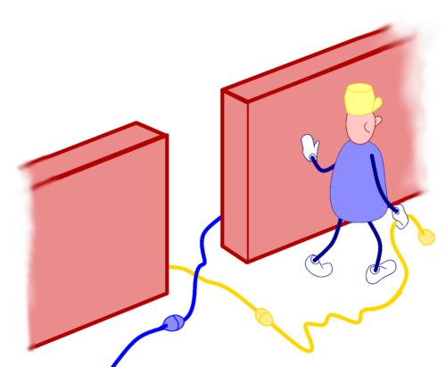

Jeder Graph und jede Figur in der Ebene ist Ausgangspunkt für ein Flechtwerk. So ist zum Beispiel das Dreieck die Grundlage für den „Kleeblattknoten“:

Figuren sind einfach herzustellen. Eine große Gruppe von ihnen wird von Mathematikern sogar „Kinderzeichnungen“ genannt. Hier ist eine

In vier Schritten gelangt man zu dem dazugehörigen Flechtwerk:

- Setzen Sie ein Kreuz in die Mitte jeder Seite.
- Verbinden Sie die Enden miteinander.
- Entscheiden Sie, welche Fäden oben, welche unten liegen.
- Verbreitern Sie Ihre Zeichnung.
Hier ist ein andere Beispiel:

 Zuerst kommt ein kleines Kreuz auf jede Seite:
Zuerst kommt ein kleines Kreuz auf jede Seite:
Es ist wichtig, die Kreuze eindeutig zu machen, damit kein Zweifel besteht, wohin die Enden zeigen. Vor allem darf man sich nicht mit einem einfachen Strich oder einem halben Kreuz zufrieden geben!

Nun geht es darum, die Enden miteinander zu verbinden wie ein Band ohne Anfang und Ende. Stellen Sie sich dabei vor, Ihre Figur ist ein Labyrinth, in dem jede Seite eine Wand ist, in deren Mitte sich wiederum eine Tür befindet. In dieser Tür liegt das Kreuz, die  Überkreuzung der Fäden. Wählen Sie eines der Fadenenden, das in eine bestimmte Richtung zeigt, folgen Sie der Wand in dieser Richtung, biegen Sie um die Ecke, folgen Sie der Wand, bis Sie zu einem weiteren Fadenkreuz kommen. Eines der Enden zeigt zu Ihnen, damit verbinden Sie Ihren Faden.

Jetzt müssen Sie den Verlauf der Fäden etwas glätten. Gehen Sie aber nicht zu schnell vor und versuchen Sie nicht zu raten, wohin ein Faden führen wird, da sonst leicht das Chaos ausbricht. Bleiben Sie also brav auf dem Weg und machen Sie eins nach dem anderen.
 Drittens müssen Sie nun bei jeder Kreuzung entscheiden, welcher Faden oben und welcher unten ist. Sie könnten sich für den ersten irgendwie entscheiden und dann dem Fadenverlauf folgen, indem Sie immer Über- und Unterquerungen abwechseln. Das mag bei kleineren Zeichnungen funktionieren, bei größeren Projekten ist es jedoch kaum noch zu bewältigen. Da kommt es leicht zu Ungereimtheiten zwischen einzelnen Teilen des Flechtwerks. Zum Glück gibt es eine einfache und sichere Methode:
Drittens müssen Sie nun bei jeder Kreuzung entscheiden, welcher Faden oben und welcher unten ist. Sie könnten sich für den ersten irgendwie entscheiden und dann dem Fadenverlauf folgen, indem Sie immer Über- und Unterquerungen abwechseln. Das mag bei kleineren Zeichnungen funktionieren, bei größeren Projekten ist es jedoch kaum noch zu bewältigen. Da kommt es leicht zu Ungereimtheiten zwischen einzelnen Teilen des Flechtwerks. Zum Glück gibt es eine einfache und sichere Methode:
 Zeichnen Sie das kleine Hilfsmodell oben links auf die Ecke eines Papiers und reißen Sie es ab. Legen Sie es neben Ihre Zeichnung, parallel zu einer der Seiten. Das Modell zeigt Ihnen jetzt, welcher Faden oben liegt und welcher unten. Machen Sie das mit allen Seiten Ihrer Zeichnung.
Zeichnen Sie das kleine Hilfsmodell oben links auf die Ecke eines Papiers und reißen Sie es ab. Legen Sie es neben Ihre Zeichnung, parallel zu einer der Seiten. Das Modell zeigt Ihnen jetzt, welcher Faden oben liegt und welcher unten. Machen Sie das mit allen Seiten Ihrer Zeichnung.
Eine andere Möglichkeit, es: eine Kante zu wählen, richten Sie diese Kante mit Ihrer Ansicht aus, stellen Sie sich auf einen Scheitel und schauen gerade an den Rand. Dann, unter den beiden Fäden, die vor dir kreuzen, kommt man von deinem Recht, der andere kommt von deiner Links. Figuren selbst halten diese Fäden mit beiden Händen, dann überqueren Sie Ihre Arme mit (sagen) die linke über die rechte.

 Der letzte Schritt besteht darin, den Faden zu verbreitern. Stellen Sie sich vor, der Faden, den Sie gerade gezeichnet haben, ist der Mittelstreifen einer Fahrbahn und die Kreuzungen sind Brücken, die andere Straßen überqueren. Beginnen Sie mit den Brücken, damit Sie wissen, wo Sie anfangen und wo Sie aufhören müssen, dann zeichnen Sie die linke und die rechte Straßenseite jeweils von Brücke zu Brücke.
Der letzte Schritt besteht darin, den Faden zu verbreitern. Stellen Sie sich vor, der Faden, den Sie gerade gezeichnet haben, ist der Mittelstreifen einer Fahrbahn und die Kreuzungen sind Brücken, die andere Straßen überqueren. Beginnen Sie mit den Brücken, damit Sie wissen, wo Sie anfangen und wo Sie aufhören müssen, dann zeichnen Sie die linke und die rechte Straßenseite jeweils von Brücke zu Brücke.
Jetzt sind Sie in der Lage, ein paar Aufgaben zu machen.